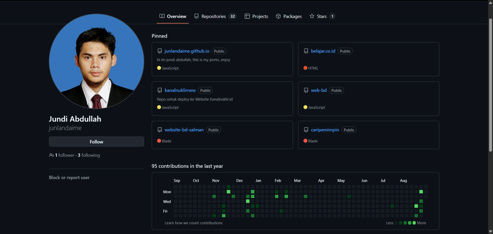

Full-Stack Web Developer & System Engineer
Jundi Abdullah, S.Si · Alumni Astronomi ITB '13 & Pengembang Web Laravel
Mengombinasikan ketelitian logika analitis sains ITB dengan rekayasa web modern untuk membangun sistem informasi institusi yang andal, aman, dan mudah digunakan. Berpengalaman merancang arsitektur backend Laravel & MySQL, integrasi antarmuka responsif Tailwind CSS, portal pendaftaran publik, serta aplikasi web interaktif.

32
Repositories
95+
Yearly Commits
Laravel
Stack Utama
Portofolio Proyek Web Terpilih
Berikut adalah deretan website dan sistem informasi live yang telah saya bangun, mencakup sistem informasi institusi, platform registrasi, hingga modul aplikasi interaktif.
Fitur & Arsitektur Utama:
Tech Stack & Tooling
Teknologi yang saya gunakan secara intensif untuk membangun aplikasi web yang cepat, aman, dan mudah dirawat.
Backend & Data
Server, Database & API
Fokus pada efisiensi query MySQL, struktur relasi database ternormalisasi, dan keamanan otentikasi data.
Frontend & UI
Antarmuka & Reaktivitas
Menghasilkan desain responsif, tipografi harmonis, animasi halus, dan aksesibilitas ramah pengguna di ponsel maupun desktop.
Tools & Deploy
Workflow & Server
Manajemen source code dengan Git teratur, pengujian API terstruktur, serta opsi deployment gratis via GitHub Pages atau hosting cPanel/VPS.
Layanan Pengembangan Web
Pilihan paket pengembangan yang dapat disesuaikan secara fleksibel dengan skala dan kebutuhan proyek Anda.
Alur Kerja Pengerjaan Proyek
Proses pengerjaan yang transparan, terstruktur, dan berorientasi pada kepuasan hasil akhir.
Briefing & Diskusi
Menelaah tujuan, target pengguna, dan fitur-fitur yang diinginkan.
Desain Arsitektur
Penyusunan skema database, alur sistem (ERD/flowchart), dan mockup antarmuka.
Development
Pengkodean bersih dengan Laravel/Tailwind, integrasi modul, dan database.
Testing & Review
Uji coba fungsi, pengetesan performa mobile, dan penyesuaian dari Anda.
Launch & Support
Deployment ke domain/hosting dan panduan pengoperasian sistem.
Tertarik Berkolaborasi atau Ingin Membangun Website?
Hubungi saya untuk mendiskusikan kebutuhan sistem, penawaran proyek, estimasi waktu, atau sekadar bertukar pikiran seputar teknologi web.
Kirim Brief via Email
Kirimkan rincian kebutuhan aplikasi web, estimasi deadline, dan anggaran Anda ke alamat email resmi saya:
Bantuan Buat Web Portofolio
Punya akun GitHub dan ingin memiliki website portofolio profil seperti ini 100% Gratis tanpa biaya hosting bulanan?
Koneksi Profesional
Terhubung melalui jaringan profesional untuk melihat riwayat karier, kontribusi repositori, dan rekam jejak: